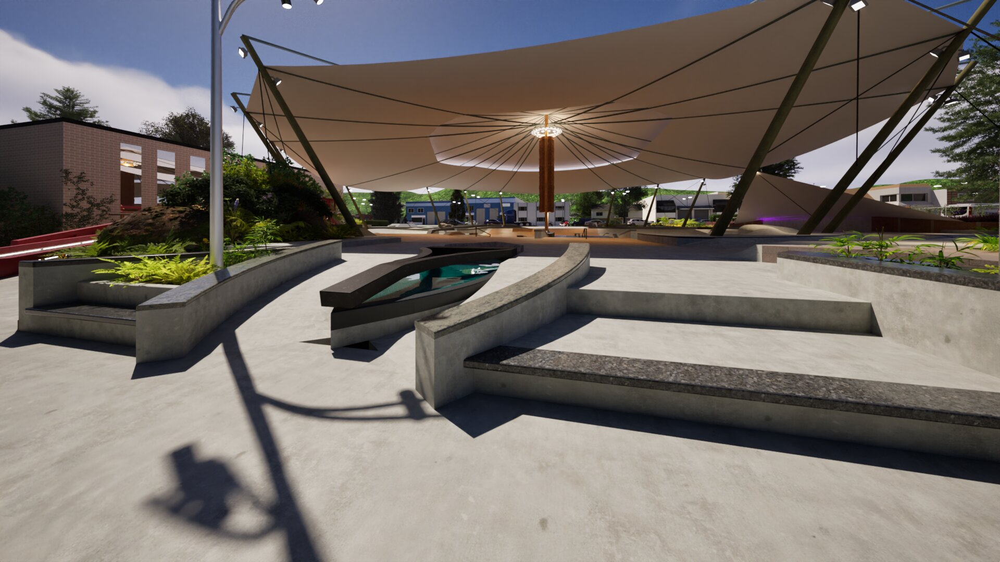
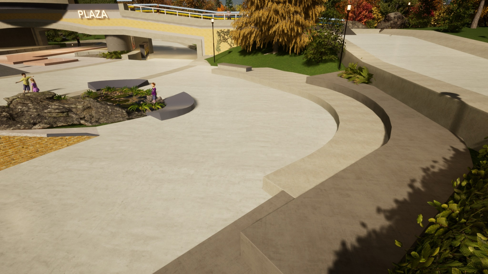
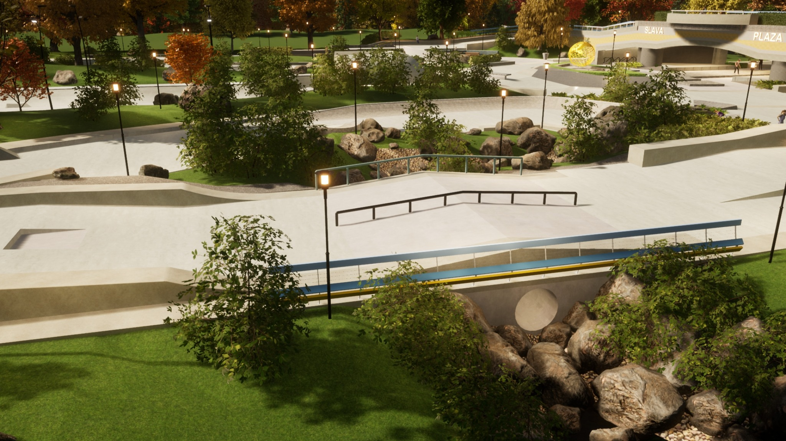
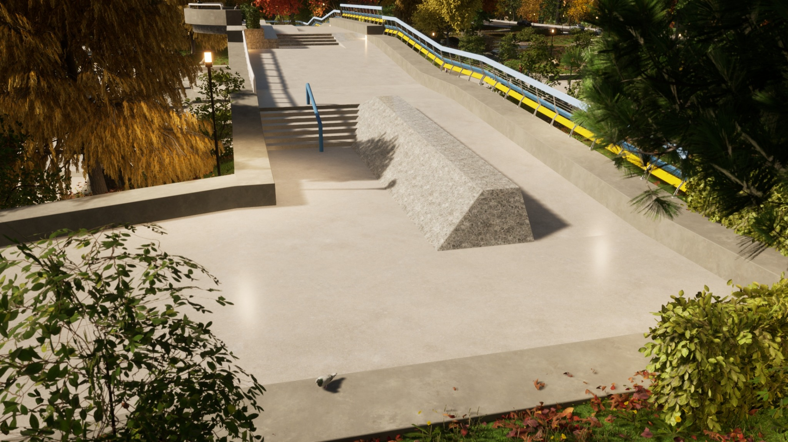
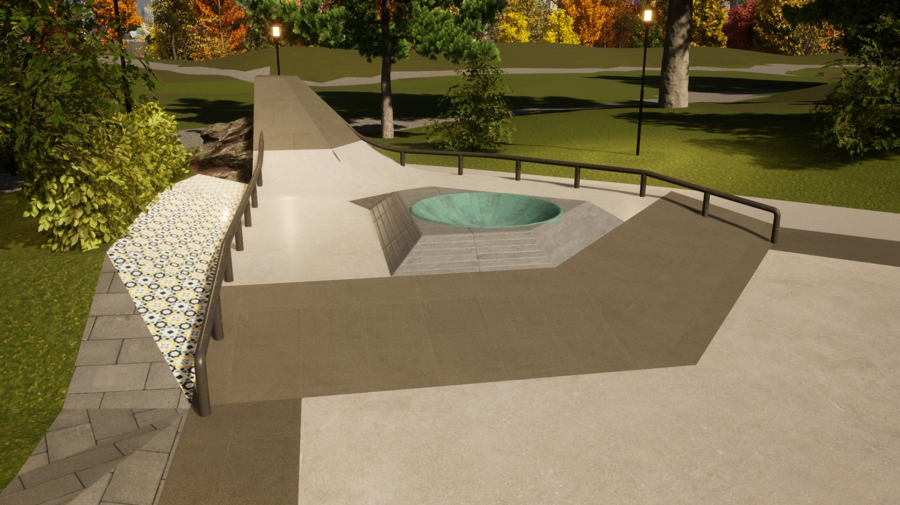

01
Concept direction
Early design thinking for skateparks, plazas, youth space, and public-use environments that need a stronger idea before the process drifts.
This work sits in the stage before a good idea gets flattened. Skateparks, plazas, youth space, memorial space, and public-use concepts that need a stronger read, better visuals, and enough point of view to survive weak decision-making.
The aim is not to sound like a big firm. The aim is to make the project clearer, stronger, and harder to misread.
Early design thinking for skateparks, plazas, youth space, and public-use environments that need a stronger idea before the process drifts.
Images that help people understand scale, flow, atmosphere, and what makes a space feel alive instead of generic.
Honest feedback on layouts, materials, and public-space decisions before the wrong version becomes the official one.
The stronger part of this project is not one obstacle. It is the overall read. Shade, circulation, seating, sculpture, bridges, transitions, pockets of terrain, and enough openness that the place can breathe.
It is trying to prove that skate-aware design does not have to be shoved into the corner of a site plan. It can help define the site itself.

Instead of a flat open pad with scattered features, the site gets an identity. The canopy turns the project into a place people can orient themselves around.

Seats, ledges, and curved transitions let the space function socially and physically at the same time. That is where these projects stop feeling dead.

The lighting, surfaces, and open sightlines help the concept feel like a civic space with life in it, not just a daytime rendering exercise.
It creates a memorable route through the site and gives the terrain underneath a stronger sectional story. That kind of move helps a project stick in people’s heads.
This concept is more ambitious and more delicate. It tries to hold civic meaning, movement, greenery, and skate use together without flattening the place into symbolic mush or a pile of separate zones.
The point is not just to add skate features to a memorial context. The point is to ask what public space looks like when daily life, grief, resilience, and youth energy all have to coexist in the same field.

Instead of forcing every movement line into hard corners, the curved edge gives the plaza more ease and opens room for sitting, watching, and crossing through.

The stream crossing and rail section show how landscape and skate terrain can sharpen each other when the details are handled with enough discipline.

That harder geometry matters. It gives the broader organic landscape a stronger counterpoint and keeps the project from getting too soft.

Small zones of compression help a large concept hold interest. They give the eye and the body something more focused to lock onto.
The strongest fit is not endless generic drafting. It is a project that matters to somebody, has real pressure on it, and needs a stronger concept or stronger visual case before momentum slips away.
Municipal work, community-led initiatives, youth spaces, advocacy-driven projects, and developers trying to make the public side of a site less dead all fit that lane.
Send the site, the stage it is at, and where it keeps getting stuck. That is usually enough to start.